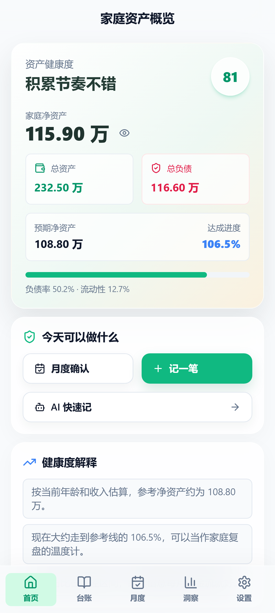
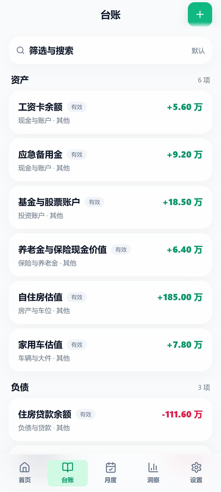
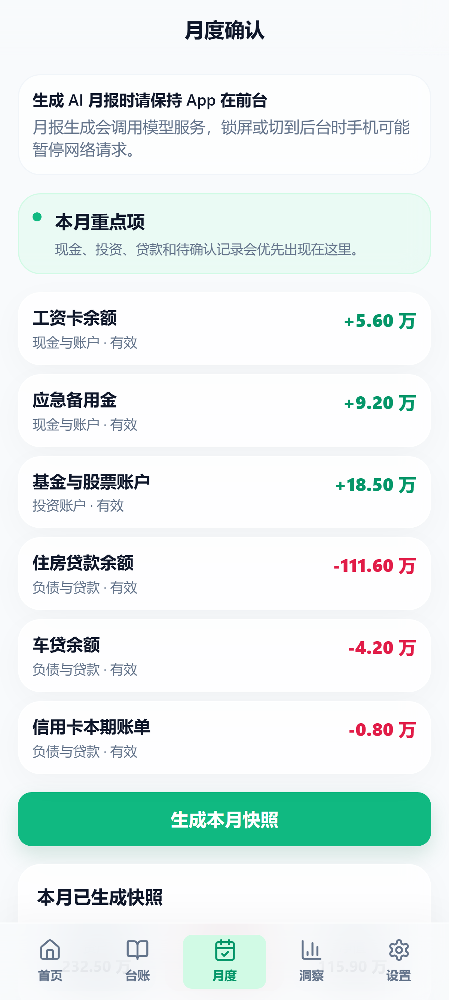
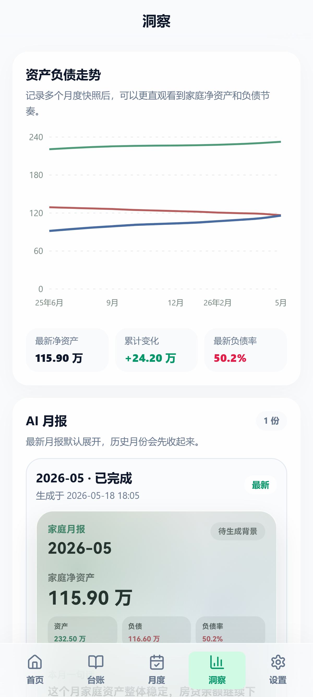
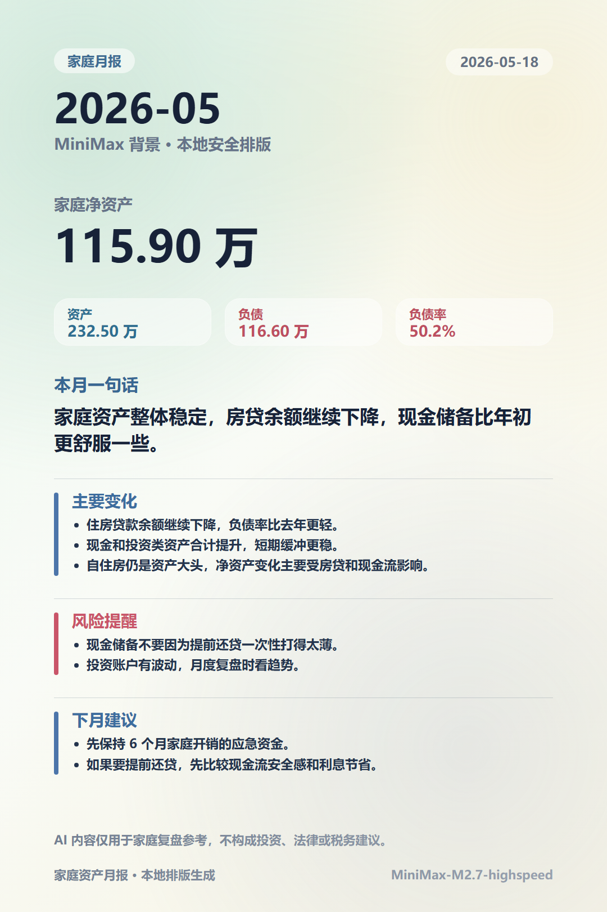

这几年我越来越觉得，很多家庭的财务焦虑并不全是因为“钱不够”，更多是因为“看不清”。背上房贷以后，这种感觉会特别明显——每个月钱进来，很快就被房贷、日常开销、保险、孩子、父母、人情往来分走。好不容易攒下一点现金，又会纠结要不要提前还贷。还了，负债是少了，可手里的现金流更薄了；不还，又总觉得背着债。我妻子就因此焦虑。
所以我一开始只想做一件很朴素的事：把家里的资产和负债梳理清楚，看看净资产到底是多少，房贷压力有多大，手里的现金是不是太薄。不是为了投资决策，也不是为了算得多精确，只是想从“凭感觉担心”，变成“摊开来看一眼”。
最早我在 WPS 云文档里建了个共享 Excel，列着银行卡、现金、基金、房子、车、房贷、公积金贷款这些项，大概每三个月更新一次。能用，但麻烦。每次都要复制旧表、改金额、检查公式，手机上看也不顺手。后来 AI 工具发展很快，我用 TRAE 先搓了一个 Web 版自己用，比 Excel 方便，但还是更适合电脑。家庭资产这种事，真正需要看的时候往往是坐在沙发上、睡前、或者突然想起来，手机端更自然。中间我还做过一个微信小程序版，认证上线后没推广，一个月只有二十来次点击。后来一想，既然主要是本地自用，数据不必上云，为什么不做成纯本地的 Android App？于是就有了现在这个版本。
下面提到的截图和月报都用的虚构测试数据，只展示功能，不代表我真实家庭资产，也不构成任何财务建议。

我把这个 App 定位成一本放在手机里的家庭资产簿，而不是记账软件。记账软件关心今天买菜、打车、订阅花了多少，这个 App 关心的是：家里现在有多少资产、多少负债、净资产涨了没有、负债率下降没有、现金流是不是太紧。它不需要每天打开。我理想的使用方式是每月打开一次，更新现金、基金市值、房贷车贷余额这些会变动的项目。房子、车、长期保险这类不怎么变的，就放在那里不动。更新完，生成一张月度快照。


现在版本的核心流程就是“月度确认”。每个月确认一下现金和银行卡余额、投资账户市值、各项贷款余额，检查有没有需要结束的记录，然后生成本月快照。快照会记下当月的总资产、总负债、净资产、负债率和分类结构。以后回头看，不用翻一堆表格，也不用担心哪次复制错了公式。

我自己用得越久，越觉得最有价值的不是某个数字，而是趋势。净资产是不是在缓慢增加，负债是不是在一点点下降，现金储备是不是总是太薄，房产是不是占了资产大头，投资类资产是不是波动太大。很多焦虑都来自单点数字，但趋势能让人平静一点。这个月现金少了，可房贷也降了，净资产还在往上走，就没必要过度紧张。如果负债率在降，但现金已经被提前还贷打得太薄，那下个月的重点就不是继续还贷，而是先把流动性补回来。这正是我做这个 App 的初衷：不替家庭做决定，只是给一个更清楚的复盘入口。

这个版本也接入了 AI，目前用 MiniMax，主要做两件事：一是“AI 快速记”，比如我说一句“新增一笔共同微信零钱 1.2 万，住房贷款剩余 57.1 万”，它能拆成待确认记录，自动匹配分类。二是“AI 月报”，在生成快照后，用脱敏后的资产摘要写一份月报，总结主要变化、风险提醒和下月建议。但有几条边界：AI 生成的记录只进待确认列表，不直接入账；AI 月报只用于复盘，不给具体投资建议；API Key 保存在本机安全存储，不写进备份文件；台账数据默认只存本地，不做云同步。启用 AI 的话，你得自己判断所选模型服务是否适合处理个人财务信息。我的想法很简单：AI 可以帮忙整理和表达，但真正的家庭财务判断，必须由人来做。
家庭资产数据太私密了。很多人可能愿意把日常消费记到云端，但未必愿意把房产、贷款、现金、投资账户这些信息交给在线服务。所以这个 Android 版从一开始就坚持本地优先：台账数据存本机；备份需要手动导出；没有账号登录，没有云同步；支持隐藏金额和启动保护；AI 密钥单独保存，不随备份走。这也意味着它不是“大而全”的商业产品，更像是面向自用、小范围试用、以及同样有类似需求的人开放的一个工具。
它比较适合已经背上房贷、想看清家庭资产负债的人；不想每天记账，但愿意每月复盘一次的人；想知道家庭净资产变化趋势的人；想把资产和负债放在同一张表里管理的人；以及不希望家庭财务数据默认上云、又想用 AI 帮忙生成月报，却依然自己掌握数据的人。
它不适合做每天消费流水记账、自动同步银行账户、获取投资推荐、多人在线协作，也不提供完整的商业级云服务。
项目放在了 GitHub：https://github.com/XiaoLi1991-star/home-finance
这个版本是从 Excel、Web、小程序一路迭代过来的，也是目前最符合我自己家庭使用习惯的一版。如果你也有类似的整理需求，可以看看源码，也欢迎提建议。
再次强调，这个项目只用于个人和家庭资产整理，不构成投资、理财、税务或法律建议。所有评分和 AI 月报只能作为辅助参考，真正的家庭财务决策仍然需要自己判断。